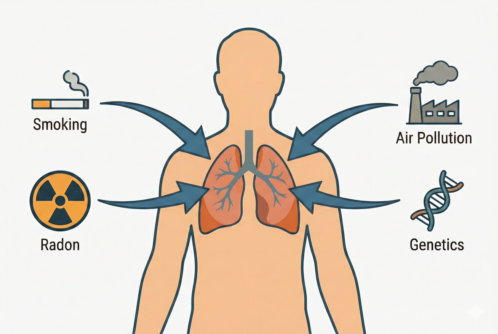

Question
Why do some patients respond?
Characterize the immune and stromal contexts associated with sensitivity or resistance to treatment.
Research track
The lung cancer program studies how tissue organization and immune context shape prognosis, therapeutic response, and resistance in non-small cell lung cancer.

Overview
Immunotherapy has created the possibility of long-term survival for a subset of patients with advanced lung cancer, but stratifying patients for effective treatment remains a major challenge.
This track evaluates patient tissue with DNA and RNA sequencing in combination with multiplex immune fluorescence, in situ sequencing, and proximity ligation assays to identify protein interactions and signaling pathway activation directly in tissue context.
Question
Characterize the immune and stromal contexts associated with sensitivity or resistance to treatment.
Material
Integrate molecular and spatial tissue information from patient samples.
Outcome
Generate interpretable biomarker candidates and therapeutic hypotheses.
Approach

Selected publications
Backman, Strell, Lindberg, Mattsson, Elfving et al.
Gerdtsson, Knulst, Botling, Mezheyeuski, Micke et al.
Mezheyeuski, Backman, Mattsson, Martin-Bernabe, Larsson et al.
Pellinen, Paavolainen, Martín-Bernabé, Papatella Araujo, Strell et al.